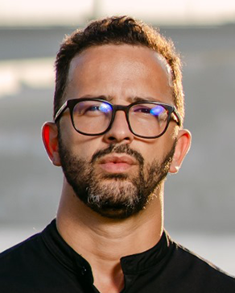
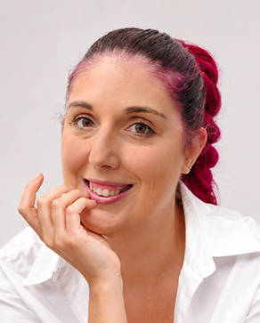
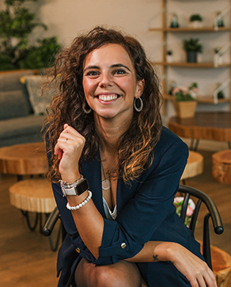

Ao longo de mais de 15 anos, os nossos estudantes criaram dezenas de filmes, fotografias, aplicações web e multimédia e exposições. Destacamos apenas alguns dos muitos projetos interessantes criados em CAM ao longo da nossa história.
PROJETOS EM DESTAQUE
OS NOSSOS GRADUADOS

Eliabe Campos
CEO Overall Studio“O curso de CAM não me preparou apenas para entrar no mercado de trabalho...”
VER DEPOIMENTO“O curso de CAM não me preparou apenas para entrar no mercado de trabalho “tradicional”, com horário fixo e a rotina de esperar pelo fim do mês para receber o salário. Pelo contrário, deu-me ferramentas e uma forma de pensar que me ajudaram a seguir um caminho próprio. Quando olho para trás, percebo que o CAM não foi só uma formação mas sim o ponto de partida para tudo o que construí até agora.”

Francisco Miranda
CEO Yank CREATIVE MEDIA“No curso de CAM descobri a minha paixão pelo som e imagem...”
VER DEPOIMENTO“No curso de CAM descobri a minha paixão pelo som e imagem, adquirindo as bases essenciais para crescer e afirmar-me na area do audiovisual, criando posteriormente a minha própria produtora de fotografia e vídeo focada em trabalho publicitário.”

Monique Moreira
UI Designer“A formação em CAM deu-me uma base importante de cultura visual...”
VER DEPOIMENTO“A formação em CAM deu-me uma base importante de cultura visual, comunicação e pensamento crítico sobre a imagem. Apesar de o meu percurso profissional se ter direcionado para UI Design, essas referências continuam a influenciar a forma como observo, analiso e crio soluções digitais no meu trabalho.”

João Rodrigues
CEO Seagmedia“Há cerca de 14 anos, eu era apenas um freelancer com vontade de crescer...”
VER DEPOIMENTO“Há cerca de 14 anos, eu era apenas um freelancer com vontade de crescer, aprender e fazer acontecer. Não imaginava, de todo, aquilo que viria a construir anos mais tarde com a SEAGMEDIA. Mas se hoje lidero uma produtora audiovisual que trabalha com grandes marcas e projetos de dimensão nacional e internacional, sei que esse percurso não foi construído sozinho. A Universidade Lusófona do Porto fez parte dessa caminhada. Não apenas pelo conhecimento técnico, mas também pela forma como ajudou a consolidar uma visão mais completa sobre a indústria criativa e sobre aquilo que significa transformar criatividade em projetos com impacto real. Olhar para trás e reconhecer isso é, acima de tudo, um sinal de gratidão.”

Jacinta Barreto
Produtora / Business Developer“Ao longo de 11 anos trabalhei na área da produção de cinema e televisão...”
VER DEPOIMENTO“Ao longo de 11 anos trabalhei na área da produção de cinema e televisão, uma experiência que me deu uma enorme capacidade de adaptação, gestão de pessoas e resolução de problemas em ambientes altamente dinâmicos. Atualmente trabalho como Business Developer na Ideaspaces, onde continuo muito ligada à criação de relações, desenvolvimento de comunidade e gestão de projetos. Apesar de serem setores diferentes, encontro muitas semelhanças entre ambos: a importância da comunicação, do trabalho em equipa, da coordenação de múltiplos stakeholders e da capacidade de transformar ideias em experiências reais e impactantes, competências que fui adquirindo na minha vida profissional, mas que tiveram o seu início no meu curso de CAM!”